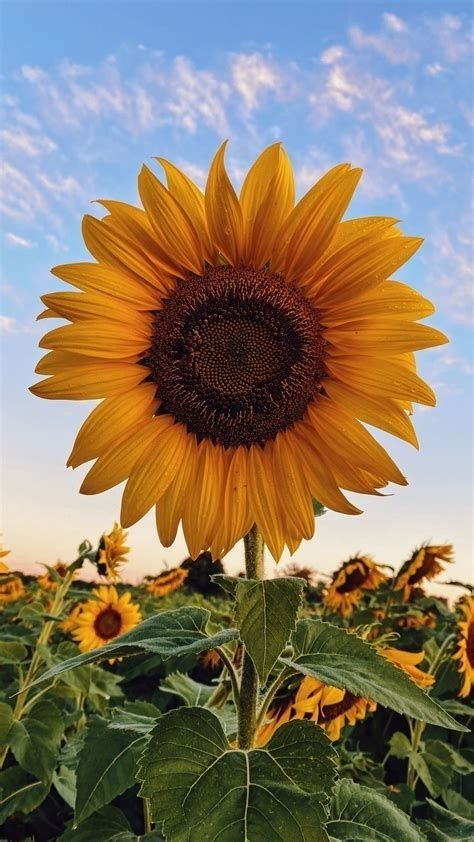

English Rose
Family: Rosaceae • Typical bloom season: late spring to autumn
Description: English roses are a group of garden roses bred for full, layered blooms and a classic old-rose shape. They often combine strong fragrance with repeat flowering, and many varieties display cupped or rosette forms in warm, soft hues such as cream, pink and apricot.
Growing & care: Plant in well-draining soil with plenty of sunlight (6+ hours/day). Regular feeding during the growing season and a good pruning in late winter/early spring will promote strong structure and abundant blooms. Watch for common pests like aphids and fungal diseases — good air circulation helps prevent mildew.
Symbolism & uses: English roses are associated with love, romance, and classic beauty; they are favorites for bouquets and cottage-garden planting. Their strong scent also makes them popular in perfumery and scented products.
English Lavender
Family: Lamiaceae • Typical bloom season: summer
Description: English lavender (Lavandula angustifolia) is prized for its compact habit, narrow aromatic leaves, and dense spikes of purple flowers. It produces a sweet, calming fragrance and is considered the hardiest culinary and ornamental lavender.
Growing & care: Lavender prefers full sun, sharp (well-draining) soil, and minimal summer watering once established. Avoid heavy, waterlogged soils — in wetter climates plant on slopes or raised beds. Prune lightly after flowering to keep plants tidy and encourage new shoots.
Symbolism & uses: Lavender symbolizes calmness, healing, and purity. It’s widely used in essential oils, sachets, culinary dishes, and garden borders for pollinators like bees.

Cherry Blossom
Family: Rosaceae • Typical bloom season: spring
Description: Cherry blossoms (sakura) are the ephemeral spring flowers produced by ornamental cherry trees. Blossoms range from white to pale pink and appear in clusters that carpet branches, creating the famous springtime displays in parks and streets.
Growing & care: Ornamental cherries prefer full sun and well-drained soil. Many varieties are relatively short-lived compared to other trees and may need proper site selection and soil care to thrive. Protect young trees from late frosts and give adequate space for root and canopy growth.
Symbolism & uses: In Japanese culture cherry blossoms represent the beauty and transience of life (mono no aware). They are central to spring festivals and are enjoyed for their delicate beauty and cultural significance.
Tulip
Family: Liliaceae (formerly) / Liliaceae-allies • Typical bloom season: spring
Description: Tulips are bulbous spring flowers with a simple, elegant cup or star-shaped bloom. They come in an enormous range of colors and patterns — solid, striped, and flame-like markings — and were historically central to horticultural trends such as the 17th-century "tulip mania" in Europe.
Growing & care: Plant tulip bulbs in autumn in a sunny, well-drained spot. Bulbs require a cold period to set flowers, so they do best in climates with a cool winter or when pre-chilled. Lift and store in warmer regions if bulbs do not perform well after a season.
Symbolism & uses: Tulips often symbolize perfect love and elegance. Color carries meaning (red = love, yellow = cheerfulness), and they are staples of spring gardens, cut-flower arrangements, and festivals.

Sunflower
Family: Asteraceae • Typical bloom season: summer
Description: Sunflowers (Helianthus annuus) are tall, cheerful annuals with large flower heads and bright yellow ray florets surrounding a central disk. Many varieties track the sun as buds (a behavior called heliotropism) and are grown for seeds and oil in addition to their ornamental value.
Growing & care: Give sunflowers a sunny location and rich, well-drained soil. They grow quickly from seed — support tall varieties to avoid wind damage. Deadhead spent blooms to extend flowering, or leave to mature for seeds if desired.
Symbolism & uses: Sunflowers symbolize warmth, adoration, and longevity. They’re used for cut flowers, bird and human food (seeds), and as cover crops. Their bright faces make them popular in meadows and educational gardens.
Daisy
Family: Asteraceae • Typical bloom season: spring to summer
Description: "Daisy" refers to several related species with the classic radiating petal-and-disk form — for example, the common oxeye daisy and the Shasta daisy. Daisies usually have a bright yellow center (disk florets) surrounded by white (or colored) ray florets.
Growing & care: Most daisies thrive in full sun with well-drained soil and moderate water. They are generally low-maintenance, good for borders and wildflower mixes, and respond well to deadheading to encourage more blooms.
Symbolism & uses: Daisies commonly represent innocence, purity, and new beginnings. They are popular in casual bouquets, mass plantings, and pollinator-friendly gardens.